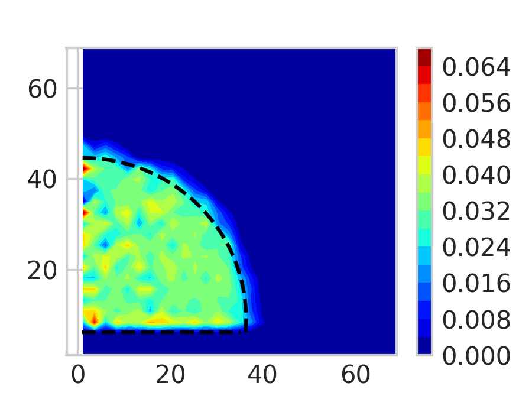

Tutorial: Contact Angle Analysis (Binning Method)
This tutorial demonstrates how to compute the contact angle using the binning method
in hydroangleanalyzer.
The method divides the simulation box into spatial bins to calculate the liquid–solid interface and
the corresponding contact angle, for a group of frames.
1. Overview
The binning method works by:
-
Collecting the positions of water molecules (typically oxygen atoms).
-
Dividing the region of interest into bins in the x–z plane.
-
Computing density profiles and fitting the interface shape.
-
Deriving the contact angle from the interface curvature.
2. Prerequisites
Your trajectory file (e.g., a LAMMPS dump file) contain:
-
Atom IDs, types, and positions
-
Liquid particles (in this cas Water molecules: O and H atoms)
Example trajectory:
tests/trajectories/traj_10_3_330w_nve_4k_reajust.lammpstrj
3. Example Script
# Import necessary modules
from hydroangleanalyzer.parser import DumpParser, DumpWaterMoleculeFinder
from hydroangleanalyzer.contact_angle_method import contact_angle_analyzer
# --- Step 1: Define the trajectory file ---
filename = "../../tests/trajectories/traj_10_3_330w_nve_4k_reajust.lammpstrj"
# --- Step 2: Initialize the water molecule finder ---
# This identifies O and H atoms in water molecules
wat_find = DumpWaterMoleculeFinder(
filename,
particle_type_wall={3}, # Wall atom types
oxygen_type=1, # Oxygen atom type
hydrogen_type=2, # Hydrogen atom type
)
# --- Step 3: Get oxygen atom indices for the first frame ---
oxygen_indices = wat_find.get_water_oxygen_ids(frame_indexs=0)
print("Number of water molecules:", len(oxygen_indices))
# --- Step 4: Define binning parameters ---
binning_params = {
"xi_0": 0.0, # Minimum x-coordinate
"xi_f": 100.0, # Maximum x-coordinate
"nbins_xi": 50, # Number of bins along x
"zi_0": 0.0, # Minimum z-coordinate
"zi_f": 100.0, # Maximum z-coordinate
"nbins_zi": 25, # Number of bins along z
}
# --- Step 5: Initialize the parser ---
parser = DumpParser(filename)
# --- Step 6: Create the contact angle analyzer ---
analyzer = contact_angle_analyzer(
method="binning",
parser=parser,
output_dir="results_binned_example",
liquid_indices=oxygen_indices,
droplet_geometry="cylinder_y", # Interface fitting model
width_cylinder=21, # Width parameter for interface fit
binning_params=binning_params,
plot_graphs=False, # Disable plotting for automated runs
)
# --- Step 7: Run analysis for a frame range ---
results = analyzer.analyze([1]) # Analyze frame 1
print("Analysis results:", results)
4. Output
Running this example will:
-
Parse the trajectory
-
Compute the interface shape and local contact angle
-
Save results (if enabled) under
results_binned_example/
Example printed output:
Number of water molecules: 4000
xi range: (0.22795857644950415,41.63623606829102)
zi range: (7.54989,47.3742)
Number of fluid particles in batch: 4000.0
Binning with model: spherical ...
Advancement: 0.00%
Advancement: 35.71%
Advancement: 71.43%
Fitted parameters for batch:
rho1:-3.387136459516587e-05
rho2:0.03389671977759232
R_eq:37.22899870907881
zi_c:9.244210981996149
zi_0:6.265045941194059
t1:-4.384696208816467
t2:0.07378719793487698
Contact angle for batch: 94.58987060394456
A heat map representation of the particles density and the fitted semi-circle to get the contact angle.
5. Tips
-
Adjust
xi_f,zi_f, and the bin counts (nbins_xi,nbins_zi) according to your simulation box dimensions. -
If the wall surface is not flat or the system is tilted, pre-align it before analysis.
-
Use
plot_graphs=Trueto visualize the binning density and interface fitting. -
For multiple frames:
analyzer.analyze(range(0, 100, 10)).